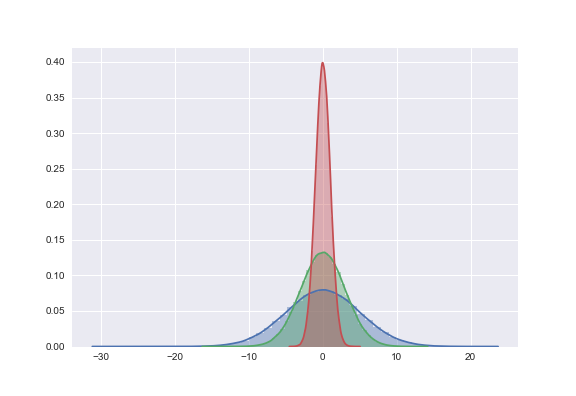
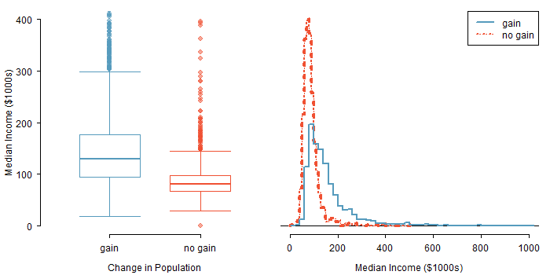

Chapter 5 Standard Deviation of a Sample
- SD \((s)\) of a set of sample values is a measure of how much, on average, the data values deviate away from the sample mean.
- In other word, SD describes the variability of the data set within the range of the dataset.
- Low variability or small spread means that the values tend to be more clustered together.
- High variability or large spread means that the values tend to be far apart.
Calculating the Standard Deviation
The standard deviation is the square root of the variance. It is roughly the average distance of the observations from the mean.
\[ \bbox[yellow,5px] { \color{black}{s= \sqrt{\frac{1}{n-1}\sum(x_i-\bar x)^2}} } \]
\(Calculate \space SD \space of \space [0,1]\)
\(Calculate \space SD \space of \space [30,20, 41, 21]\)
Which histogram has the largest SD?

Notice the spread of the distributions.
Standard Deviation of a Population
\[ \bbox[yellow,5px] { \color{black}{\sigma= \sqrt{\frac{1}{N}\sum(x_i-\mu)^2}} } \] Variance of a Sample and Population
The variance of a set of values is a measure of variation equal to the square of the standard variation.
- Sample variance: \(s^2 =\) square of the sample standard deviation \(s\).
- Population variance: \(\sigma^2 =\) square of the population standard deviation \(\sigma\).
Coefficient of Variation
The coefficient of variation (CV) for a set of nonnegative sample or population data, expressed as a percent, describes the standard deviation relative to the mean, and is given by the following:
\[ Sample: CV = \frac{s}{x}.100 \\ Population: CV = \frac{\sigma}{x}.100 \]
5.1 Normal Distribution | 68-95-99.7 Rule
Probabilities for falling 1, 2, and 3 standard deviations of the mean in a normal distribution.

5.2 Percentiles and Quartiles
- Percentiles divide the data in one hundred groups.
- The \(n^{th}\) percentile is the data value such that \(n^{th}\) percent of the data lies below that value.
\[ \text{Percentile of value x} = \frac{\text{number of values less than x}}{\text{total number of values}} \times 100 \]
Three Quartiles \((Q_1, Q_2, Q_3)\)
- \(Q_1\) represents the first quartile, which is the 25th percentile, and is the median of the smaller half of the data set.
- \(Q_2\) represents the second quartile, which is equivalent to the 50th percentile (i.e. the median).
- \(Q_3\) represents the third quartile, or 75th percentile, and is the median of the larger half of the data set
- Interquartile Range \((IQR) = Q_3 - Q_1\)
5.3 Outlier and Fences
When in the context of a box plot, define an outlier as an observation that
right fence: \[ > Q_3 + 1.5 \times IQR \]
left fence: \[ < Q_1 - 1.5 \times IQR \]
Such points are marked using a dot or asterisk in a box plot.
5.4 Box Plot
Data: \([5, 5, 9, 10, 15, 16, 20, 30, 40]\)
Min. 1st Qu. Median Mean 3rd Qu. Max.
5.00 9.00 15.00 16.67 20.00 40.00 
5.5 Example: Drawing a Boxplot with an Outlier
Students in one of the author’s statistics classes were surveyed about the number of novels they read in the past year. Here are the anonymous responses (in numbers of novels) of 11 of the students:
\([2, 5, 2, 0, 2, 3, 0, 5, 6, 4, 12]\)
- Construct a boxplot.
- What is the meaning of the outlier?
5.6 Linear Transformation of Normal Curve | Standardizing with Z-Scores
Consider a normally distributed random variable \(x\) with mean \(\mu\) and sd \(\sigma\): \(x \tilde \space N(\mu, \sigma)\)
Two-step linear transformation of \(x\)
- subtract \(\mu\) from \(x\)
- divide \((x-\mu)\) by \(\sigma\)
\[\bbox[yellow,5px]{\color{black}{\text{standard normal deviate: } z = \frac {x-\mu}{\sigma}}}\]
The Z-score of an observation is defined as the number of standard deviations it falls above or bemow the mean. If the observation is one standard deviation above the mean, its Z-score is 1. If it is 1.5 standard deviations below the mean, then its Z-score is -1.5.
5.7 Linear Transformation | Normal Curve to Standard Normal Curve
The normal distribution model describes a symmetric, unimodal, bell-shaped curve. It can be adjusted using two parameters; mean \((\mu)\) and standard deviation \((\sigma)\).
5.8 The Standard Normal Curve
 \[ \bbox[yellow,5px]
{
\color{black}{{\text {Density at z}} = \frac {1}{\sqrt {2\pi}}\exp{-\frac{1}{2}z^2}, -\infty<z<+\infty}
}
\]
\[ \bbox[yellow,5px]
{
\color{black}{{\text {Density at z}} = \frac {1}{\sqrt {2\pi}}\exp{-\frac{1}{2}z^2}, -\infty<z<+\infty}
}
\]
Optional Materials
5.9 Altering SD

5.10 Group Comparison
Comparing distributions of median household income for counties by population gain status

Source: OpenIntroOrg
5.11 Smoothing Plot: Moving Average
5.12 Transformation of the Data
- Data with outliers (i.e. skewed distribution) are hard to interpret
- Such data are often transformed into their logarithmic form to give the skewed distribution a normal (i.e. roughly unimodal and symmetric) shape for better interpretation